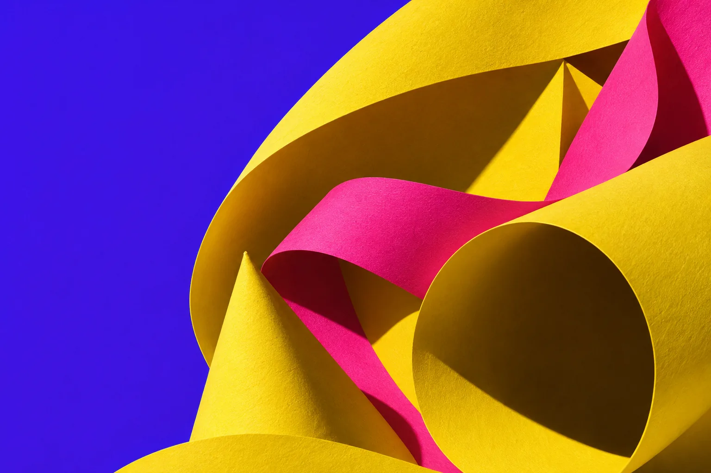
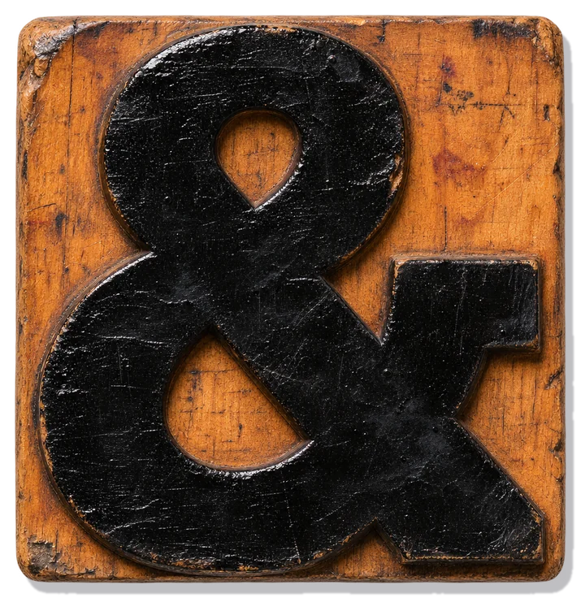
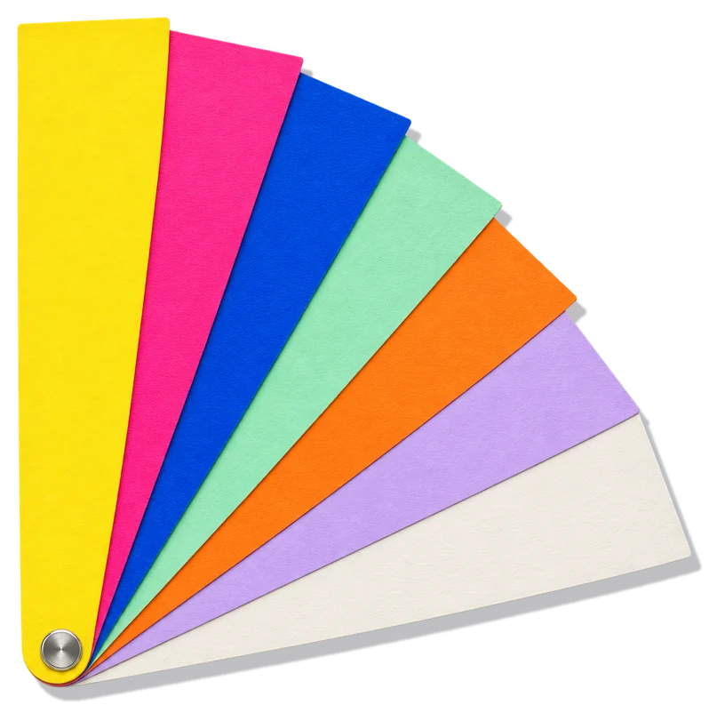
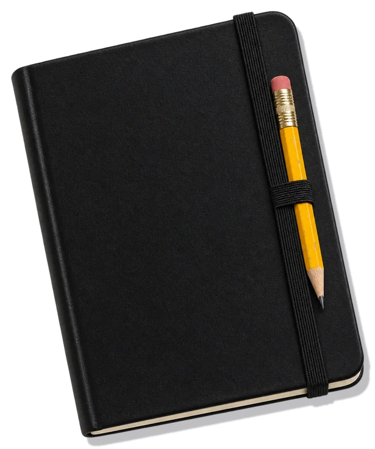
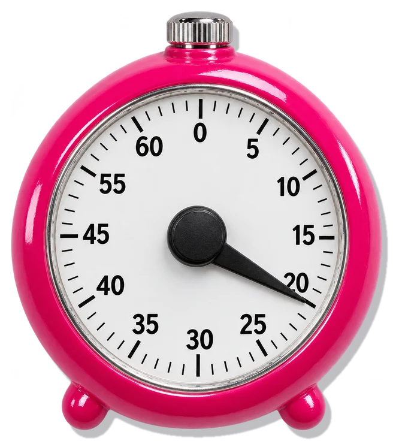

Change your
point of view.
Find three ways to solve the same brief. Your first idea is a starting point, not a conclusion.
Train your eye. Sharpen your thinking.
Make things that mean something.
Move beyond how it looks.
Discover why it works.
Good design starts
before the canvas.
Becoming a better designer means learning to notice what others miss. The rhythm of a page. The tension in a shape. The reason a small detail feels right.
This is a place to build that instinct. Six connected disciplines, a little experimentation, and a habit of asking one more question.

Scale directs attention.
Space gives it somewhere to go.
Find three ways to solve the same brief. Your first idea is a starting point, not a conclusion.
Hide an element. If the message becomes clearer, leave it out. Give the important parts room.
Name the reason for your type, color, and motion. “It looks cool” is the beginning of the answer.
Start anywhere. Each discipline strengthens the others. Open a chapter for a principle, a practical exercise, and a way to judge your work.
Don’t just collect references.
Take them apart.
When something catches your eye, name the decisions behind it: scale, contrast, spacing, material, sequence. A useful reference teaches you a principle you can apply somewhere else.
Pick a poster. Rebuild its composition using only black rectangles. Remove its words and images. Does the hierarchy still hold?
Ask yourself What do I notice first, second, and third—and why?
Solve a real problem.
Then give it a form.
Before opening your tools, write down who you are helping, what they need to do, and what gets in the way. Speak to someone who actually faces that problem. Separate what you know from what you assume.
Choose an everyday frustration. Ask someone to walk through the last time it happened. Write a one-sentence brief using their words, then sketch three different responses.
Ask yourself What evidence would tell me this idea is useful?

Type is a voice
before it is a font.
Choose type for what the message needs to sound like. Build a clear hierarchy with size and weight before adding another family. Set paragraphs for reading: comfortable line length, enough leading, and strong contrast.
Set the same event announcement three ways: urgent, quiet, and playful. Use one family. Change only scale, weight, spacing, and alignment.
Ask yourself Can a stranger find the event, date, and location in five seconds?

Everything is relative.
Make the relationships clear.
A headline is large in relation to something smaller. A color is vivid against its surroundings. Establish a grid, group related elements, and use empty space to separate ideas. Give the most important thing the strongest contrast.
Design a small exhibition poster using two sizes, two colors, and a single alignment. Make three versions with a different focal point in each.
Ask yourself Does every element have a reason for its position and emphasis?
Nothing saved yet.
An interaction should
explain what just happened.
Map the states before animating between them. Show what changed, preserve a sense of place, and give feedback when an action takes time. Motion should help a person understand the interface.
Sketch a save action in four states: ready, saving, saved, and failed. Write useful feedback for each. Then try the flow with only a keyboard and with motion turned off.
Ask yourself Is the next step still obvious without animation?
Get specific.
Then make another version.
Replace “I don’t like it” with a clear observation: the hierarchy is ambiguous, the label is unclear, or the spacing groups unrelated ideas. Change one variable at a time so you know what helped.
Show a design to someone without explaining it. Ask what they think it is for and what they would do next. Choose one mismatch and revise only that part.
Ask yourself What improved—and what did my change make harder?
Design an exhibition poster.
Change the hierarchy.
Notice what you feel first.
A huge headline sets the pace. Small details reward a second look.
More room changes the tone. The same invitation feels considered and calm.
Repetition builds an expectation. One change becomes the focal point.
One word. A thousand ways to say it.
Move the controls and notice how weight and space change its personality.
A middle weight leaves room for the letterforms to speak. Tight spacing makes the word feel like a single shape.
Move from a reaction
to a useful next step.
Start with what you can see. The title and action have equal emphasis, so your eye has no clear starting point.
Return to the purpose. Does the reader need to understand the idea, compare options, or take an action?
Increase the title’s scale. Show both versions without explaining them. Ask someone what they notice first.
Twenty minutes. One deliberate exercise.
A little more attention than yesterday.

Choose a magazine spread. Trace the alignments between its text and images. Rebuild the layout with simple rectangles, then change one alignment and notice what breaks.
